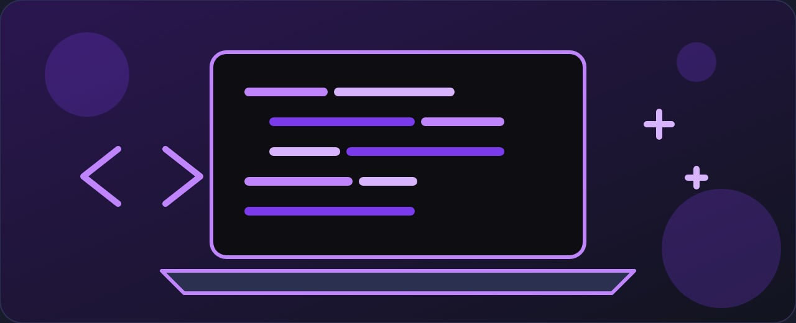
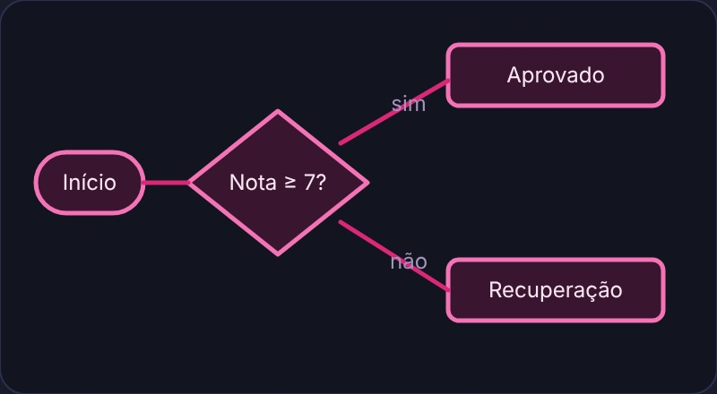
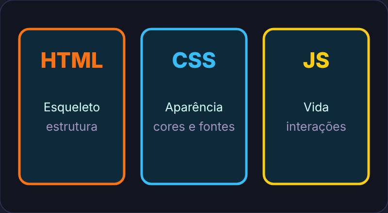
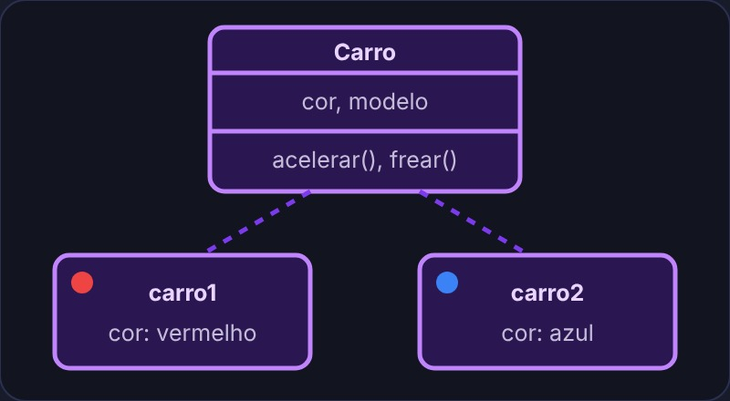
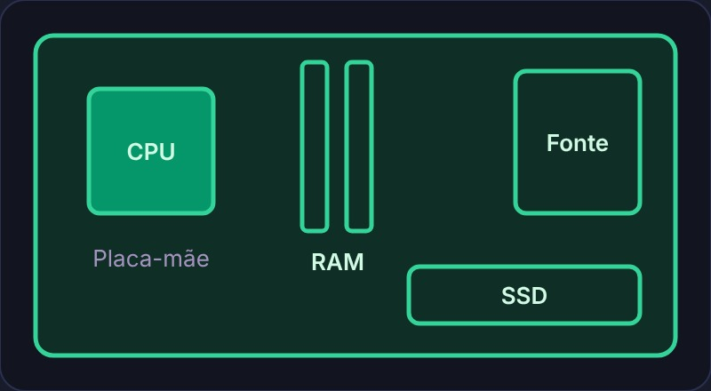
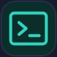
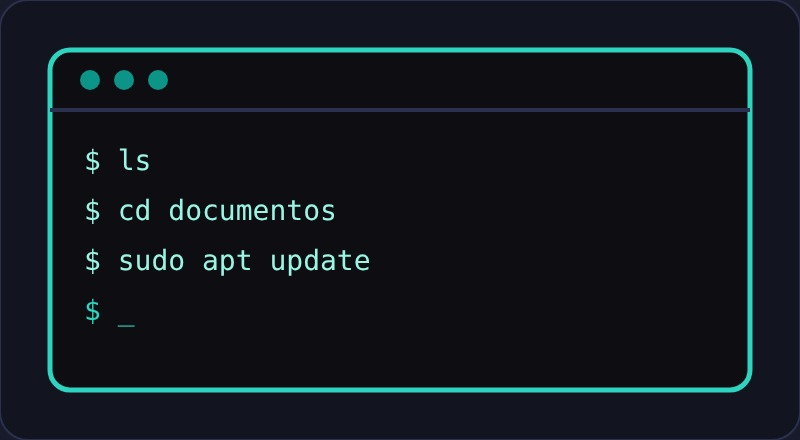
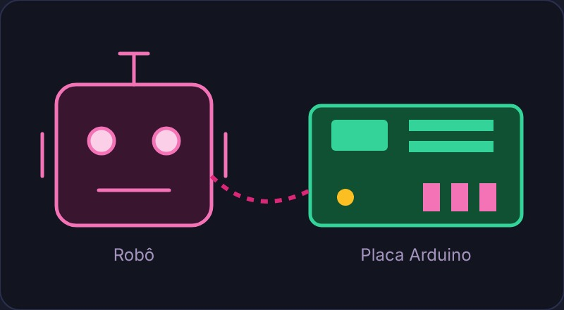
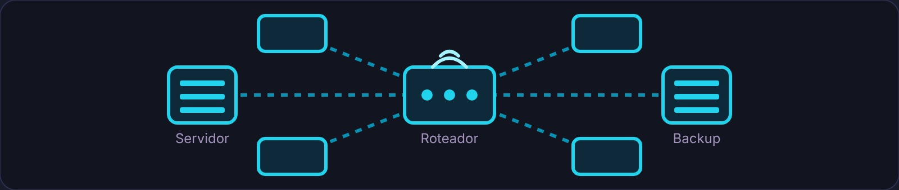
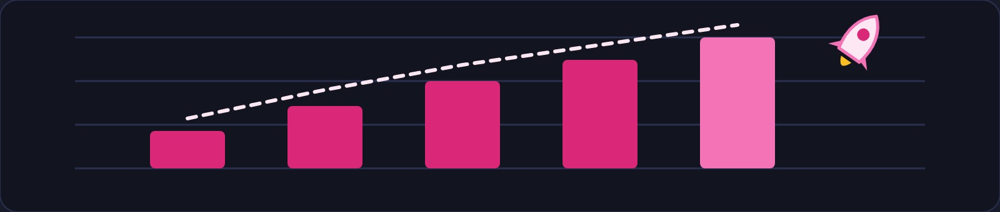

Formação em Informática
Conheça as matérias, as habilidades desenvolvidas e as oportunidades na área de tecnologia.

Matérias que aprendemos
Informática básica
É o ponto de partida. Ensina o uso do computador no dia a dia e nivela a turma, para que todos tenham uma base segura antes de avançar para conteúdos mais técnicos:
- Como ligar e desligar corretamente
- Usar o Windows (ou outro sistema)
- Criar pastas, copiar, colar e organizar arquivos
- Usar internet, e-mail, Word, Excel e PowerPoint de forma básica
- Noções de segurança (vírus, senhas, etc.)
- Pesquisar informações na internet de forma eficiente e confiável
- Boas práticas de uso e cuidado com os equipamentos
Lógica de Programação
É a base de qualquer programação.
Ensina a pensar como um programador antes de escrever código. Em vez de decorar comandos, você aprende a dividir um problema grande em partes menores e a organizar a solução em etapas claras:
- Sequência de passos
- Tomada de decisão (se... senão)
- Repetições (laços)
- Variáveis e algoritmos
- Teste de mesa: acompanhar o algoritmo passo a passo para achar erros
Normalmente usa pseudocódigo ou fluxogramas. É a matéria que desenvolve o raciocínio lógico, e esse raciocínio será usado em todas as linguagens de programação que você aprender depois.

Programação WEB
Ensina a criar sites e aplicações que rodam no navegador. Abrange o conjunto de tecnologias usadas para desenvolver páginas e sistemas online (front-end e, às vezes, um pouco de back-end). O front-end é a parte que o usuário vê e usa: o visual, os botões e os formulários. O back-end é a parte que trabalha "por trás", guardando informações, validando dados e respondendo às ações do usuário. Nesta matéria, você constrói páginas reais e aprende como elas são publicadas na internet.
HTML
A linguagem de marcação que estrutura o conteúdo de uma página web. Com HTML você define títulos, parágrafos, imagens, links, tabelas, formulários etc. É o "esqueleto" de qualquer site. Normalmente é a primeira linguagem que se aprende em Programação WEB. O HTML trabalha junto com o CSS, que cuida da aparência (cores, fontes, tamanhos e organização na tela), e com o JavaScript, que dá vida à página com interações e animações.

Gestão de Tempo
Não é matéria técnica de informática.
Mesmo assim, é uma das mais úteis para a vida profissional. Ensina técnicas para organizar melhor o tempo de estudo e trabalho, algo essencial para quem precisa cumprir prazos de projetos e atender vários chamados ao mesmo tempo:
- Priorizar tarefas
- Evitar procrastinação
- Usar agendas, listas e métodos (como Pomodoro)
- Equilibrar estudo, projetos e vida pessoal
- Definir metas realistas e acompanhar o próprio progresso
Programação Orientada a Objetos
Um estilo de programação mais avançado. Em vez de só pensar em "passos", você pensa em objetos que têm características (atributos) e comportamentos (métodos). Conceitos principais: classes, objetos, herança, encapsulamento e polimorfismo. É usada em linguagens como Java, C#, Python e PHP. Um exemplo simples: uma classe "Carro" pode ter atributos como cor e modelo, e métodos como acelerar e frear. A partir dela, você cria vários objetos (um carro vermelho, um carro azul) sem reescrever o código. Essa forma de organizar o programa facilita a manutenção e o reaproveitamento, e é muito usada em sistemas grandes.

Arquitetura e Manutenção de Computadores
Estuda como o computador funciona por dentro e como consertá-lo. É a matéria mais prática em relação ao hardware, geralmente com aulas em laboratório, onde os alunos manuseiam peças de verdade:
- Peças (processador, memória RAM, HD/SSD, placa-mãe, fonte etc.)
- Como montar e desmontar um PC
- Identificar e resolver problemas de hardware
- Instalar e configurar componentes
- Cuidados com eletricidade estática e segurança no manuseio
- Limpeza e manutenção preventiva


Sistemas OperacionaisEstuda o software que controla o computador (Windows, Linux, macOS etc.). É ele que faz a ligação entre o hardware e os programas que usamos.
Você aprende:
- Como o sistema gerencia memória, processos e arquivos
- Instalação e configuração
- Comandos básicos (principalmente no Linux)
- Diferenças entre sistemas operacionais
- Gerenciamento de usuários e permissões de acesso
- Uso de máquinas virtuais para testar sistemas sem risco

Robótica
Une programação + eletrônica + mecânica.
Você aprende a montar e programar robôs (geralmente com Arduino ou similares). É uma matéria que costuma motivar muito os alunos, porque o resultado do código aparece de forma física: o robô se mexe, acende uma luz ou reage a um obstáculo.
- Sensores e motores
- Programação para controlar o robô
- Lógica de movimento e interação com o ambiente
- Leitura de circuitos simples e montagem em protoboard
- Trabalho em equipe em projetos e desafios

O que um técnico de informática pode ser responsável por fazer em uma empresa?

Um técnico de informática (TI) pode ser responsável por diversas atividades em uma empresa, alguns exemplos são: em empresas pequenas, uma única pessoa costuma cuidar de tudo; em empresas maiores, as tarefas são divididas entre equipes especializadas, como redes, suporte e segurança. Nos dois casos, o técnico é peça fundamental para que o trabalho dos outros setores não seja interrompido.
Infraestrutura e Redes
Configurar redes: Um TI pode ser responsável por instalar roteadores, switches, modems e configurar o sinal de Wi-Fi. Também cuida do compartilhamento de impressoras e do acesso à internet por todos os setores. Organizar estrutura de cabeamento: estruturar cabos de rede de internet pelos escritórios, identificando cada ponto e mantendo tudo organizado para facilitar futuras manutenções. Monitorar servidores: garantir que os servidores locais ou em nuvem estejam funcionando sem interrupções. Isso inclui acompanhar o uso de recursos, aplicar atualizações e agir rapidamente quando algum serviço sai do ar. Backup e recuperação: criar e testar rotinas de cópia de segurança para que os dados da empresa possam ser recuperados em caso de falha, erro humano ou ataque.
Suporte e manutenção
Instalação/Atualização de softwares: Atualizar, formatar, instalar, configurar sistemas operacionais (Linux, Windows, macOS) e programas de trabalho (pacote Office). Manter os sistemas atualizados também é importante para corrigir falhas de segurança. Gerenciar usuários: criar e alterar e-mails corporativos, senhas e permissões de acesso a pastas da empresa. Quando um funcionário entra ou sai, o técnico libera ou bloqueia os acessos dele. Suporte em problemas de hardware/software: Substituir peças defeituosas, resolver possíveis problemas no hardware/software das máquinas, checagem diária. O atendimento pode ser presencial ou remoto, e os chamados costumam ser registrados para acompanhar o que foi resolvido e o que ainda está pendente.
Gestão e Inventário
Inventário de ativos: Controlar quais equipamentos a empresa possui (quem está com qual notebook, número de série de monitores, etc). Esse controle evita perdas e ajuda a planejar quando trocar os equipamentos mais antigos. Gestão de licenças: Garantir que todos os softwares utilizados na empresa estejam devidamente pagos e legalizados, evitando multas e problemas jurídicos. Treinamento de usuários: Orientar os colaboradores sobre boas práticas de uso da tecnologia e segurança digital (como identificar e-mails falsos/phishing). Muitos incidentes de segurança começam por descuido de usuários, por isso a orientação é uma parte importante do trabalho.
Áreas no mercado de trabalho

MAIS COMUNS (PRIMEIROS EMPREGOS)
TI (EM GERAL), pessoas de escritório, técnicos. São vagas de suporte ao usuário, manutenção de computadores, apoio em redes e rotinas administrativas ligadas à tecnologia. São ótimas para ganhar experiência prática e conhecer como uma empresa funciona por dentro.
PARA PESSOAS COM MAIS EXPERIÊNCIA
- Desenvolvimento Web, Mobile
- Ciência e Engenharia de Dados
- Desenvolvimento de Jogos
- Inteligência Artificial e Machine Learning
- Segurança da Informação e DevSecOps
- Cloud Computing
Quanto ganha um técnico de informática?
O Técnico de informática ganha por volta de R$2.549 mensais (mediana) no Brasil. O grupo central da categoria recebe de R$2.012 a R$3.586, intervalo estreito que acompanha a natureza técnica da função: o salário responde menos ao porte da empresa e mais à existência de adicional por deslocamento, sobreaviso ou atendimento externo. Vale lembrar que esses valores são referências gerais e podem mudar conforme a região, o tipo de empresa, a experiência do profissional e os benefícios oferecidos.
MAIS COMUNS (PRIMEIROS EMPREGOS)
TI (EM GERAL), pessoas de escritório, técnicos: No Brasil, o salário médio geral de um profissional de TI no mercado formal fica em torno de R$5.381 a R$7.600 por mês. Essa média inclui profissionais de vários níveis e funções, por isso o salário de quem está começando costuma ficar abaixo dela.
PARA PESSOAS COM MAIS EXPERIÊNCIA
-
Desenvolvimento Web e Mobile
O profissional desenvolve sites, aplicativos e sistemas para computadores e celulares. Pode trabalhar em empresas ou como autônomo, atendendo clientes por conta própria. É uma das áreas com mais vagas e com muitos materiais gratuitos para aprender. Os salários variam de R$ 3 mil a R$ 20 mil por mês. -
Ciência e Engenharia de Dados
Esse profissional coleta, organiza e analisa dados para ajudar empresas a tomar decisões. Utiliza ferramentas como Python e SQL, além de gráficos e painéis para apresentar os resultados. Os salários variam de R$ 5 mil a R$ 24 mil por mês. -
Desenvolvimento de Jogos
O profissional cria jogos para computadores, celulares e videogames, trabalhando com programação, personagens e cenários. Costuma atuar em equipe com artistas, roteiristas e designers, e exige criatividade além da parte técnica. Os salários variam de R$ 3 mil a R$ 16 mil por mês. -
Inteligência Artificial e Machine Learning
Esse profissional desenvolve sistemas inteligentes que conseguem aprender, reconhecer padrões e realizar tarefas automaticamente, como recomendar produtos, entender textos ou identificar objetos em imagens. Exige boa base em matemática e programação. Os salários variam de R$ 7 mil a R$ 27 mil por mês. -
Segurança da Informação e DevSecOps
O profissional protege sistemas, redes e informações contra ataques de hackers e invasões. Também define regras de acesso, monitora ameaças e ajuda a incluir a segurança desde o início do desenvolvimento de um sistema. Os salários variam de R$ 5 mil a R$ 26 mil por mês. -
Cloud Computing
Esse profissional trabalha com armazenamento, servidores e sistemas na nuvem, garantindo que serviços digitais funcionem corretamente, com segurança e custo controlado. Muitas empresas estão migrando seus sistemas para a nuvem, o que mantém a demanda alta. Os salários variam de R$ 5 mil a R$ 26 mil por mês.